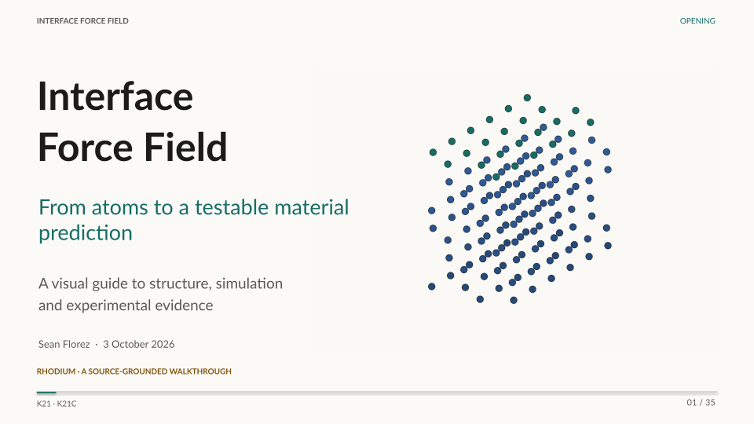

Corrected Rh geometry; camera motion only. Not a simulated material trajectory.
GIF · Static PNG · MP4
← / →, swipe or choose a slide · N notes · P present
Media library · MP4, GIF and static alternatives


Prescribed analytical two-atom motion in reduced units. Not materials MD.
GIF · Static PNG · MP4

Published numerical comparisons followed by a hypothetical new evidence contract. No new validated revision.
GIF · Static PNG · MP4

All videos are silent, with visible labels. Every animation has a static alternative. Reduced-motion users receive the same static slides and can choose playback.